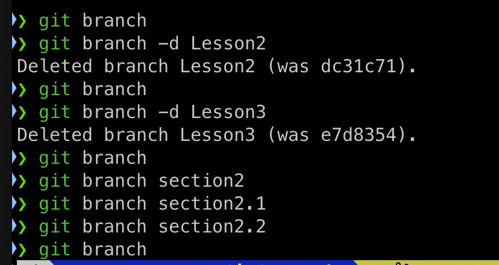

Git Commands
Basic Git Commands
- git init: Initialize a new Git repository in the current directory
- git status: Shows the status of working directory and staging area, displaying changes and untracked files.
- Untracked files are the files which git is not tracking.
- git add < file-name >: Add given file to the stageing area.
- git add . : Add all untracked files to the stageing area.
- git rm --cached < file-name > : Remove file from staging area to untracked area.
- git commit -m "your coomit message": Commit the staged changes to the local repository with a message.
- git log: Show the commit history for the current branch.
- git diff: Show changes between commits ,branches or the working directoy and the index.
- git help commit:Help for the commit command.
- git checkout < branch-name >:Switch branches or restore working tree files.
- git branch:To list branches
- git branch < branch-name >:To create a new branch.
- git branch -d < branch-name >:To delete a branch.
- git rm < file_name >:To remove a file.
- git restore < file_name >to discard changes in working directory i.e previous commit changes will be avalable.
- git restore --staged < file_name >
- git rm < file_name > : To remove a file
- git rm --cached < file_name > : staged to untracked
- Loving Git !!!
Uncovered Commands
- clone
- push
- pull
Branching & Merging
- git branch : Manage branches
- git branch # List all branches
- git branch %ltname$gt # Create a new branch
- git branch -d <name> # Delete a branch
- Below image is the result of git branch command

- Below image is the result of git branch command after git branch -d Lesson2

- Below image is the result of git branch command after git branch -d Lesson3

- Summary of all git branch commands

- Below image is the result of above image commands